용접기사 (2015-08-16 기출문제)
1과목: 기계제작법
1. 소성가공에서 열간가공과 냉가가공을 구분하는 기준온도는?
- 단조 온도
- 변태 온도
- 담금질 온도
- 재결정 온도
(정답률: 79%)

2. 다음 중 직류 콘덴서법과 관계가 깊은 것은?
- 방전가공
- 전해가공
- 전해연마
- 초음파가공
(정답률: 42%)
3. 압연에서 롤러의 구동은 하지 않고 감는 기계의 구동으로 압연을 하는 것으로 연질재의 박판 압연에 사용되는 압연기는?
- 유성압연기
- 3단 압연기
- 4단 압연기
- 스테켈 압연기
(정답률: 60%)
4. 딥 드로잉으로 지름 60mm, 높이 50mm의 원통용기를 만들고자 할 때 블랭크의 지름은? (단, 모서리의 반지름은 극히 작다.)
- 약 124.9mm
- 약 1145.8mm
- 약 166.7mm
- 약 187.6mm
(정답률: 28%)
5. 항온열처리 중 담금질 온도로 가열한 강재를 Ms점과 Mf점 사이의 항온 염욕에서 항온 변태를 시킨 후에 상온까지 공냉하는 담금질 방법은?
- 마퀜칭
- 마템퍼링
- 오스포밍
- 오스템퍼링
(정답률: 57%)
6. 일정온도에서 가열된 금속 소재의 접합부를 맞대고 압력 또는 충격을 가하여 접합하는 방법으로 용제(flux)로는 봉사 등을 사용하는 용접법은?
- 단접
- 가스 용접
- 테르밋 용접
- 피복 아크 용접
(정답률: 71%)
7. 주조하려는 주물과 동일한 모형을 왁스, 파라핀 등으로 만들어 주형재에 파묻고 다진 후에 가열로에서 주형을 경화시킴과 동시에 모형재를 유출시켜 주형을 만드는 방법은?
- 원심 주조
- 다이캐스팅
- 셸 몰드 주조
- 인베스트먼트 주조
(정답률: 64%)
8. 절삭공구 재료 중 다이아몬드의 특성에 대한 설명 중 틀린 것은?
- 장시간 고속으로 절삭이 가능하다.
- 금속에 대한 마찰계수 및 마모율이 크다.
- 표면 거칠기가 우수한 면을 얻을 수 있다.
- 경도가 커서, 날 끝이 손상되면 재가공이 어렵다.
(정답률: 80%)
9. 머시닝 센터에 사용되는 준비기능(G code)중 가공할 면의 선택기능과 무관한 것은?
- G17
- G18
- G19
- G20
(정답률: 52%)
10. 다음 단조색 중 온도가 가장 높은 색은?
- 백색
- 암갈색
- 앵두색
- 황적색
(정답률: 64%)
11. 리드스크루 피치 8mm인 선반으로 피치 3mm의 2줄 나사를 깎을 때 변화기어의 계산값으로 맞는 것은? (단, A는 주축의 전동기어 잇수, C는 리드스크루의 기어잇수 이다.)
- A=44, C=64
- A=58, C=54
- Q=64, C=48
- Q=78, C=24
(정답률: 47%)
12. 주조의 조형작업에서 상형과 하형을 쉽게 분리하기 위하여 또는 모형이 주물사에서 쉽게 빠지도록 분할면이나 모형표면에 뿌리거나 바르는 것은?
- 도형제
- 이형제
- 점결제
- 첨가제
(정답률: 68%)
13. 침탄경화법에서 재료의 침탄량을 감소시키는 원소는?
- Cr
- Ni
- Mo
- Si
(정답률: 36%)
14. 공작물을 고정시켜놓고 주축이 위치를 이동시켜 구멍의 중심을 맞추어 작업하는 것으로서 대형공작물에 여러 개 구멍을 가공할 때 공작물을 이동시키지 않고 암(arm)을 칼럼(column)주위에 회전시켜 가고하는 드릴머신은?
- 다축 드릴링 머신
- 직립 드릴링 머신
- 탁상 드릴링 머신
- 레이디얼 드릴링 머신
(정답률: 66%)
15. 고체 레이저가 아닌 것은?
- 루비
- YAG
- He-Ne
- CaWO4
(정답률: 50%)
16. 강재의 표면에 Si를 침투시키는 방법으로 내식성, 내열성 등을 향상시키는 방법은?
- 브론나이징
- 칼로라이징
- 크로마이징
- 실리코나이징
(정답률: 74%)
17. 특수 압연기 중 H형강을 압연하기 위하여 동일평면에 상하 수평롤러와 좌우 수직롤러의 축심이 있는 압연기는?
- 로터리 압연기
- 플러그 압연기
- 유니버설 압연기
- 맨네스맨 압연기
(정답률: 47%)
18. 초음파 가공의 특징으로 틀린 것은?
- 가공물체에 가공변형이 남지 않는다.
- 공구 이외에는 거의 마모부품이 없다.
- 가공면적이 넓고, 가공 깊이도 제한받지 않는다.
- 다이아몬드, 초경합금, 열처리 강 등의 가공이 가능하다.
(정답률: 66%)
19. 재료에 금긋기 작업(layout work)을 할 때 없어도 되는 것은?
- 탭(tap)
- 펀치(punch)
- 정반(surface plate)
- 서피스게이지(surface gauge)
(정답률: 52%)
20. 구성인선(built up edge)방지대책 중 틀린 것은?
- 절삭속도를 크게 한다.
- 경사각(rake angle)을 적게 한다.
- 절삭공구의 인선을 날카롭게 한다.
- 절삭 깊이(depth of cut)를 적게 한다.
(정답률: 55%)
2과목: 재료역학
21. 보속의 굽힘응력의 크기에 대한 설명 중 옳은 것은? (단, 작용하는 굽힘모멘트와 단면은 일정하다.)
- 중립면으로부터의 거리에 정비례한다.
- 중립면에서 최대가 된다.
- 중립면으로부터의 거리의 제곱에 비례한다.
- 중립면으로부터의 거리의 제곱에 반비례한다.
(정답률: 56%)
22. 그림과 같은 단면이 균일하고 굽힘강성 EI인 외팔보의 자유단에 하중 P가 작용할 때 탄성곡선의 식은?
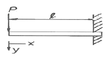
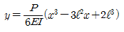
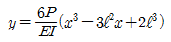
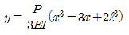
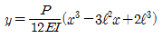
(정답률: 55%)
23. 그림과 같이 직사각형 단면을 가진 단순보에 600N의 집중하중이 작용할 때 보에 생기는 최대 굼힙응력은?
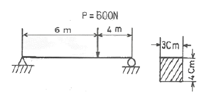
- 130 MPa
- 180 MPa
- 220 MPa
- 250 MPa
(정답률: 50%)
24. 직경이 d인 원형축의 허용전단응력을 τa라 한다면 이 축에 가해질 수 있는 최대 비틀림 모멘트 T는 어떻게 표현되는가?
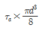
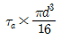
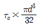
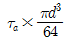
(정답률: 46%)
25. 비틀림 모멘트 T를 받는 길이 L인 봉의 비틀림 변형 에너지 U는? (단, G : 전단탄성계수, J : 극관성모멘트)
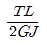
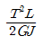
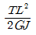
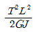
(정답률: 49%)
26. 길이 L이고, 단면적이 A인 탄성 막대에 축 하중 P를 작용시켜 탄성 변형량 δ가 생겼을 때, 후크의 법칙은? (단, E는 막대의 탄성계수이다.)
- P=Eㆍδ
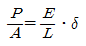
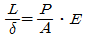
- δ=EㆍP
(정답률: 63%)
27. 그림과 같이 균일 분포 하중을 받는 외팔보에 대해 굽힘에 의한 탄성변형에너지는? (단, 굽힘강성 EI는 일정하다.)
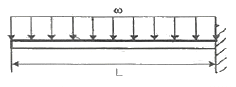
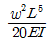
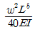
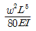
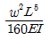
(정답률: 42%)
28. 길이 10m의 열차 레일이 0℃일 때 3mm의 간격을 두고 가설되었다. 온도가 35℃로 상승하면 응력은 얼마나 생기는가? (단, 열팽창계수 a=1.2×10-5/℃이고, 탄성계수 E=210GPa 이다.)
- 25.2 MPa 인장
- 36.5 MPa 인장
- 36.5 MPa 압축
- 25.2 MPa 압축
(정답률: 19%)
29. 두께 1cm, 폭 5cm의 강판에 P=10.4kN이 작용한다. 이 판 중심에 원형구멍이 있을 경우 안전율을 고려한 최대 지름(d)은 약 몇cm인가? (단, 강판의 강도 390MPa, 안전율 5, 응력집중계수 a=3으로 한다.)
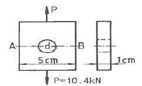
- 0.5
- 1
- 1.5
- 2
(정답률: 27%)
30. 반지름이 r인 중 실축에 토크 T가 작용하고 있다. 작용 토크의 1/3을 지지하는 내부코어(inner core)의 반지름(r)을 구하면? (단, 재질은 선형 탄성 균질재이다.)
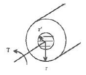
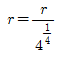
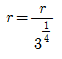
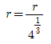
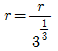
(정답률: 26%)
31. 그림과 같이 지름 d의 원형 단면의 원목으로부터 최대 굽힘강도를 갖도록 직사각형 단면으로 나무를 잘라내려고 한다. 보의 치수의 비 b/n는 얼마인가?
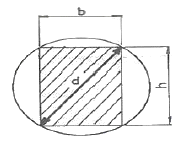
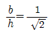
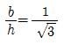
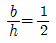
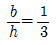
(정답률: 32%)
32. 일반적으로 연성재료에 인장 축하중이 작용할 때 나타나는 재료의 거동을 설명한 것 중 틀린 것은?
- 파단이 발생할 때까지의 축방향의 수직변형률이 취성 재료보다 크게 나타남
- 축방향의 수직방향으로 파단면이 발생함
- 대체적으로 취성재료보다 인장강도를 가짐
- 파단이 발생할 때까지의 단면수축률이 취성재료보다 크게 나타남
(정답률: 27%)
33. 그림과 같은 외팔보에 대한 전단력 선도로 옳은 것은? (단, 아래방향을 양으로 본다.)
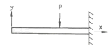
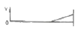
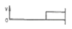
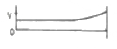
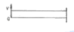
(정답률: 50%)
34. 그림과 같은 10mm×10mm의 정사각형 단면을 가진 강봉이 축압축력 P=60kN을 받고 있을 때 사각형 용소 A가 30° 경사되었을 때 그 표면에 발생하는 수직 응력은 약 몇 MPa 인가?
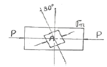
- -120
- -150
- -300
- -450
(정답률: 20%)
35. 그림과 같이 두 외팔보가 롤러(Roller)를 사이에 두고 접촉되어 있을 때, 이 접촉점 C에서의 반력은? (단, 두 보의 굽힘강성 EI는 같다.)
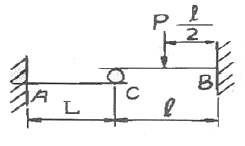
- P/6
- P/24
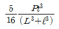
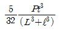
(정답률: 45%)
36. 다음과 같은 부정정 막대에서 양단에 작용하는 반력은?
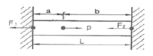
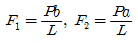
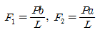
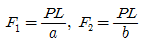
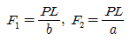
(정답률: 50%)
37. 원형 단면인 외팔보의 자유단에 연직하방으로 작용하는 집중하중과 비틀린 모멘트가 동시에 작용하고 있다면 고정단의 윗 부분의 요소에 생기는 응력상태는 어떻게 되는가?
- 인장 굽힘응력만 생긴다.
- 압축 굽힘응력만 생긴다.
- 전단응력만 생긴다.
- 인장 굽힘응력과 전단응력이 생긴다.
(정답률: 52%)
38. 재료의 비례한도 내에서 기둥의 좌굴에 대한 설며 중 틀린 것은?
- 좌굴응력에 직접 고려되는 유일한 재료의 성질은 탄성계수(E) 뿐이다.
- 좌굴응력은 기둥의 길이 L의 제고베 반비례한다.
- 세장비가 클수록 좌굴응력은 작아진다.
- 관성 모멘트(I)가 작아질수록 좌굴하중은 커진다.
(정답률: 58%)
39. 다음과 같은 부정정(不淨定)보에서 고정단의 모멘트 Mo의 값은 어느 것인가?
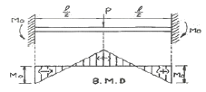
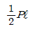
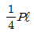
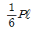
(정답률: 26%)
40. 알루미늄봉이 그림과 같이 축하중을 받고 있다. BC간에 작용하는 하중은?
- -3P
- -2P
- -4P
- -8P
(정답률: 29%)
3과목: 용접야금
41. 용접 루트 크랙을 설명한 것 중 틀린 것은?
- 용접 비드가 클수록 일어나기 쉽다.
- 용착금속이 냉각되어 수축할 때 일어난다.
- 용착금속 주위에 노치가 있으면 발생하기 쉽다.
- 맞대기나 필릿 용접의 200℃이하에서 생기는 저온균열이다.
(정답률: 36%)
42. 금속의 공통적 특성을 설명한 것 중 틀린 것은?
- 이온화하면 음(-)이온이 된다.
- 열과 전기의 좋은 양도체이다.
- 금속적 광택을 가지고 있다.
- 소성변형성이 있어 가공하기 쉽다.
(정답률: 73%)
43. 탄소강에 함유되어 있는 구리의 영향이 아닌 것은?
- 인장강도를 낮춘다.
- 탄성한도를 증가시킨다.
- 열간 가공성을 저하시킨다.
- 부식에 대한 저항성을 증가시킨다.
(정답률: 43%)
44. 코비탈륨과 유사한 합금으로 강도 내열성이 우수하고 고온강도가 크므로 공냉 실리더 헤드, 피스톤 등에 사용되며, 합금 조성이 Al-Cu-Ni-Mg인 합금은?
- Y합금
- 라우탈
- 두랄루민
- 도우메탈
(정답률: 67%)
45. 탄소강에서 청열 메짐(blue shortness)이 일어나는 온도는 약 몇 ℃인가?
- 650 ~ 750℃
- 500 ~ 600℃
- 350 ~ 450℃
- 200 ~ 300℃
(정답률: 63%)
46. 고온균열에 대한 설명 중 틀린 것은?
- 1000℃ 이상의 고온에서 발생한다.
- 응고 후 48시간 이내에 발생하는 균열이다.
- P, S, Cu등의 불순물이 입계에 편석으로 발생한다.
- 용접직후 고온에서 용접부의 수축 및 외부 변형에 의해 발생한다.
(정답률: 61%)
47. 오스테나이트계 스테인리스강(18Cr-8Ni)의 입계부식을 방지하기 위한 방법이 아닌 것은?
- C 함량이 낮은 재료를 사용
- 고용화 열처리한 재료를 사용
- 안정화 처리된 재료를 사용
- 100 ~ 200℃에서 가열하여 탄화물을 고용한 재료를 사용
(정답률: 53%)
48. 용융슬래그의 구성 중 산화물의 분류가 아닌 것은?
- 중성
- 산성
- 염기성
- 용제성
(정답률: 71%)
49. 경질 주조 합금 공구 재료로서, 주조한 상태 그대로를 연삭하여 사용하는 비철합금은?
- 실루민
- 스텔라이트
- 고망간강
- 하이드로날륨
(정답률: 43%)
50. 탄소강에서 적열취성의 원인이 되는 것은?
- P
- S
- Cl
- H2
(정답률: 64%)
51. A3 또는 Acm선보다 30~50℃ 뫂은 온도로 가열한 다음 공기 중에 냉각시켜 강을 표준화시키는 열처리는?
- 뜨임
- 퀜칭
- 노멀라이징
- 항온열처리
(정답률: 63%)
52. 용융금속의 수소 용해도를 현저하게 감소시키는 원소는?
- C
- Cr
- Mn
- Nb
(정답률: 25%)
53. 강의 5대 원소에 포함되지 않는 것은?
- C
- Si
- Mn
- Cr
(정답률: 63%)
54. 용융금속의 결정립 미세화 방법이 아닌 것은?
- 자기교반
- 초음파진동
- 합금원소 첨가
- 입상정 생성
(정답률: 47%)
55. 담금질한 강을 100 ~ 200℃ 부근에서 저온 뜨임하는 목적으로 틀린 것은?
- 마모성의 향상
- 연마 균열의 방지
- 담금질 응력 제거
- 치수의 경년변화 방지
(정답률: 59%)
56. 4.3%C의 공정성분인 액체가 1130℃에서 응고하여 생기는 철 - 탄화철계의 공정조직으로 오스테나이트와 시멘타이트가 혼합된 조직은?
- 펄라이트(pearlite)
- 페라이트(ferite)
- 레데뷰라이트(ladeburite)
- 트루스타이트(troostite)
(정답률: 59%)
57. 용접품 후열처리의 주된 목적이 아닌 것은?
- 열영향 경화부의 연화
- 용접부의 고온성능의 향상
- 용접부의 부식성 향상
- 용접부의 수소 방출 효과
(정답률: 66%)
58. 강의 담금질 조직을 냉각 속도에 따라 분류할 때 해당되지 않는 것은?
- 소르바이트
- 마텐자이트
- 페라이트
- 트루스타이트
(정답률: 47%)
59. Fe-C 평행상태도에서 δ-Fe의 결정구조는?
- 저심입방격자
- 체심입방격자
- 면심입방격자
- 조밀육방격자
(정답률: 48%)
60. 고장력강을 용접하기 전에 예열을 함에 따라 용접 후 얻어지는 현상이 아닌 것은?
- 열응력 감소
- 변형 감소
- 탈산 방지
- 균열 방지
(정답률: 67%)
4과목: 용접구조설계
61. 용접 변형 방지법의 종류 중 용접물을 정반에 고정시키든지 보강재를 이용하든지 또는 일시적인 보조판을 붙이든지 하여 변형을 방지하면서 용접하는 방법은?
- 역변형법
- 억제법
- 교호법
- 비석법
(정답률: 66%)
62. 용접결합 중 오버랩의 원인이 아닌 것은?
- 부적합한 운봉법 사용
- 용접 속도가 느릴 때
- 부적합한 용접봉 사용
- 용접 전류가 높을 때
(정답률: 74%)
63. 필릿 용접부에 틈새가 4mm 발생하였을 때 보수 방법으로 옳은 것은?
- 규정의 다리 길이로 용접한다.
- 틈새량 만큼 규정의 다리 길이를 증가시켜 용접한다.
- 큼새에 맞는 용접봉을 끼워 넣고 규정의 다리 길이로 용접한다.
- 틈새에 라이너(liner)를 끼워 넣고 용접한다.
(정답률: 41%)
64. 용접시험 중 유화물의 함유량과 분포상태를 검출하는 시험은?
- 부직시험
- 파면시험
- 설퍼프린트시험
- 화학분석시험
(정답률: 59%)
65. 용접부이 기본 기호에서 Ⅲ의 명칭은?
- 가장자리 용접
- 심 용접
- 표면 육성
- 겹침 접합부
(정답률: 59%)
66. 용접결함의 분류 중 구조상의 결함이 아닌 것은?
- 형상불량
- 기공
- 슬래그 섞임
- 용접균열
(정답률: 66%)
67. 용접봉의 피복제에 규정치 이상의 높은 습기를 가진 용접봉을 건조시키지 않고 그냥 사용했을 때 발생되는 현상이 아닌 것은?
- 인장강도가 높아진다.
- 아크가 불안정하게 된다.
- 스패터가 많아진다.
- 언더비드 균열의 원인이 된다.
(정답률: 74%)
68. 용접기의 사용률(%)을 정의한 것으로 옳은 것은?
(정답률: 81%)
69. 용접부의 검사법 중 비파괴 시험에 해당되는 것은?
- 굽힘 시험
- 피로 시험
- 침투 시험
- 노치 취성 시험
(정답률: 74%)
70. 일반적으로 용접구조물에서의 피로강도를 향상시키는데 주의할 사항으로 틀린 것은?
- 냉간가공에 의한 기계적인 강도를 높인다.
- 열처리 또는 기계적인 방법으로 잔류응력을 완화시킨다.
- 기계가공으로 용접부의 응력집중계수를 높인다.
- 용접부에 외력과 반대방향의 응력을 잔류시킨다.
(정답률: 63%)
71. 한 부분의 몇 층을 용접하다가 이것을 다음부분의 층으로 연속시켜 전체가 계단형태의 단계를 이루도록 용착시켜 나가는 용착법은?
- 비석법(skip mathod)
- 전진블록법(block mathod)
- 케스케이드법(cascade mathod)
- 대칭법(symmetry mathod)
(정답률: 63%)
72. 용접구조물 또는 구조요소에서의 피로강도를 향상시키기 위한 방법 중 틀린 것은?
- 냉간가공 또는 야금적 변태 등에 의하여 기계적인 강도를 높일 것
- 표면가공 또는 다듬질 등에 의하여 단면이 급변하는 부분을 피할 것
- 열 또는 기계적인 방법으로 잔류 응력을 완화시킬 것
- 가능한 응력집중부에 용접부가 많이 되도록 설계할 것
(정답률: 79%)
73. [그림]과 같이 완전 용입된 맞대기 용접이음의 굽힘모멘트(Mb)가 900Nㆍm로 작용할 때 최대 굽힘응력은 몇 MPa 인가? (단, ℓ=150mm, t=10mm로 한다.)
- 180
- 270
- 360
- 450
(정답률: 30%)
74. T이음과 모서리이음 등에서 모재의 비금속 개재물에 의한 원인으로 강의 내부에 강판 표면과 평행하게 층상으로 발생하는 용접결함은?
- 라미네이션 크랙(Lamination crack)
- 루트 크랙(Root crack)
- 토우 크랙(Toe crack)
- 라메라 티어(Lamella tear)
(정답률: 32%)
75. 맞대기 용접 이음부에서 용입 깊이가 10mm이고 용접선의 길이가 1m 일 때 20kN의 인장하중을 받았다면 용접부의 걸리는 인장 응력은?
- 0.2MPa
- 2MPa
- 10MPa
- 20MPa
(정답률: 36%)
76. 필릿 용접이음부의 루트부분에 생기는 저온균열로 모재의 열팽창 및 수축에 의한 비틀림을 주원인으로 볼 수 있는 균열은?
- 힐 균열
- 루트 균열
- 토 균열
- 비드 밑 균열
(정답률: 24%)
77. 용접부의 기공이 미치는 영향 중 틀린 것은?
- 응력집중을 일으킨다.
- 인장강도를 저하시킨다.
- 피로강도를 저하시킨다.
- 굽힘강도를 향상시킨다.
(정답률: 80%)
78. 용접부 인장시험에서 초기단면적이 100mm2이고, 인장 파단 후의 단면적이 95mm2일 경우에 단면 수축률은?
- 1%
- 5%
- 10%
- 15%
(정답률: 72%)
79. 용접 후 잔류응력의 완화법이 아닌 것은?
- 저온응력 완화법
- 용접재의 불림
- 기계적 응력 완화법
- 피닝법
(정답률: 47%)
80. 용착금속 깊은 곳의 미세한 결함 검출이 가능하고, 탐상결과를 즉시 알 수 있는 비파괴 시험법으로 적당한 것은?
- 초음파 탐상법
- 방사선 투과시험
- 액체침투 탐상시험
- 자분탐상시험
(정답률: 11%)
5과목: 용접일반 및 안전관리
81. 아크의 열적 핀치효과를 이용한 용접법은?
- 불활성가스 아크 용접
- 전자 빔 용접
- 레이저 용접
- 플라즈마 아크 용접
(정답률: 52%)
82. 아크 용접기의 감전방지 를 위한 가장 적합한 것은?
- 헬멧
- 리밋 스위치
- 2차 권선장치
- 전격 방지 장치
(정답률: 75%)
83. 피복 아크 용접봉의 심선과 편심률로 옳은 것은?
- 고탄소림드강, 3%이내
- 저탄소림드강, 3%이내
- 고탄소림드강, 5%이내
- 저탄소림드강, 5%이내
(정답률: 69%)
84. 이산화탄소 아크용접 시 이산화탄소 가스에 산소를 1~5%를 혼합하는 이유가 아닌 것은?
- 슬래그 생성량이 많아져 비드 표면을 균일하게 덮어 외관이 개선된다.
- 용융지의 온도가 상승한다.
- 용입이 감소한다.
- 용착금속이 청결해진다.
(정답률: 60%)
85. 높은 진공 속에서 용접을 진행하므로 대기와 반응하기 쉬운 재료도 용접이 가능한 것은?
- 초음파 용접
- 전자빔 용접
- 레이져 용접
- 플라즈마 용접
(정답률: 39%)
86. 가스 용접에서 사용하는 용기에 대한 설명으로 옳은 것은?
- 산소용기의 최고 충전압력의 TP로 표시한다.
- 산소는 산소 용기에 15℃, 15기압의 저압으로 충전된다.
- 프로판 가스용기의 내압시험 압력은 30kgf/cm2이상이다.
- 수소 가스용기의 도색은 청색이다.
(정답률: 34%)
87. 로울러 전극 사이에서 이루어지고 있으며, 강관과 같은 파이프 제조에 쓰이는 용접으로 가장 적당한 것은?
- 맞대기 시임(butt seam)용접법
- 매시 시임(mash seam)용접법
- 플래시(flash)용접법
- 돌기(projection)용접법
(정답률: 50%)
88. 피복 아크 용접에서 용접부에 기공(Blow hole)이 생기는 원인이 아닌 것은?
- 아크에 수소 또는 일산화탄소가 너무 많을 때
- 용착부가 급냉 될 때
- 용접봉에 습기가 많을 때
- 모재에 황의 함유량이 적을 때
(정답률: 74%)
89. 마찰용접의 특징으로 틀린 것은?
- 이종금속의 접합이 가능하다.
- 작업능률이 높으며 변형의 발생이 적다.
- 피용접물의 형상, 모양에 제한을 받지 않는다.
- 치수의 정밀도가 높고, 재료가 절약된다.
(정답률: 82%)
90. 아크전압 32V, 아크전류 220A의 용접조건에서 용접속도를 15cm/min으로 할 경우 용접입열값은 얼마인가?
- 28160 J/cm
- 4700 J/cm
- 7040 J/cm
- 1760 J/cm
(정답률: 59%)
91. 다음 중 용접봉의 저장 및 취금시의 주의사항으로 틀린 것은?
- 저수소계 용접봉은 건조를 하지 않는다.
- 용접봉은 충분히 건조된 장소에 보관한다.
- 수분을 흡수한 용접봉은 건조하여 재사용한다.
- 용접봉 취급시 피복제가 벗겨지지 않도록 한다.
(정답률: 59%)
92. 직류 아크용접기를 사용하여 용접할 경우는 극성을 주의하여야 한다. 이때 용접봉에는 (-)극을 연결하고 모재에는 (+)극을 연결하는 것은?
- 정극성
- 역극성
- DCEP
- DCRP
(정답률: 72%)
93. 알루미늄 합금을 전기저항 용접할 때에는 어떻게 하는 것이 좋은가?
- 강보다 용접전류를 크게 하고 통전시간을 짧게 한다.
- 강보다 용접전류를 크게 하고 통전시간을 길게 한다.
- 강보다 용접전류를 작게 하고 통전시간을 짧게 한다.
- 강보다 용접전류를 작게 하고 통전시간을 길게 한다.
(정답률: 49%)
94. 황이 층상으로 존재하는 강을 서브머지드 아크용접할 때 일어나며, 고온균열의 일종에 속하는 것은?
- 설퍼 균열
- 라미네이션 균열
- 매크로 균열
- 비드 밑 균열
(정답률: 47%)
95. 용접 지그를 선택하는 기준이 아닌 것은?
- 용접하고자 하는 물체를 튼튼하게 고정시켜 줄 수 있는 크기와 강성이 있어야 한다.
- 용접 할 간극을 적당하게 받쳐주어야 한다.
- 피용접물과의 고정과 분해가 쉬어야 한다.
- 용접변형을 발생시킬 수 있는 구조 이어야 한다.
(정답률: 73%)
96. 산소 용기의 취급상 주의사항으로 옳은 것은?
- 통풍이 잘되고 직사광선이 잘드는 곳에 보관한다.
- 가연성 물질과 함께 보관한다.
- 안전을 위해 용기는 눕혀서 보관한다.
- 기름이 묻은 손이나 장갑을 끼고 취급하지 않는다.
(정답률: 69%)
97. 연강 용접시 일반적으로 예열이 필요한 판두께는 몇 mm 이상인가?
- 5mm 이상
- 15mm 이상
- 25mm 이상
- 35mm 이상
(정답률: 36%)
98. 내용적이 33L인 산소용기의 고압력계에 100kgf/cm2으로 나타났다면, 프랑스식 300번의 팁으로는 몇 시간 용접할 수 있는가? (단, 산소와 아세틸렌의 혼합비는 1 : 1이다.)
- 11시간
- 15시간
- 20시간
- 7.5시간
(정답률: 64%)
99. 표피, 진피, 하피까지 영향을 미쳐서 피부가 검게 되거나 반투명 백색이 되고, 피부조직과 구조가 파괴되기 때문에 치료기간이 오래 걸리는 화상은?
- 제 1도 화상
- 제 2도 화상
- 제 3도 화상
- 제 4도 화상
(정답률: 61%)
100. 서브머지드 아크 용접의 특징으로 옳은 것은?
- 용입이 얕다.
- 적용재료의 제약을 받는다.
- 비드 외관이 거칠다.
- 용착속도가 느리다.
(정답률: 67%)